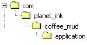

|
|

The first and most critical step in installing
CoffeeMud is to make sure that you have downloaded and
installed Oracle Java SDK/ JDK
1.8 or
better. If
you are using some flavor of Unix or Linux instead of Windows, make
sure you aren't trying to get by with GCJ, OpenJDK, or OpenJVM -- CoffeeMud does
not
support it, because it does not support CoffeeMud. You should
also make sure the "java" command is in your default PATH.
Now, if you are upgrading from a previous version of
CoffeeMud, you need to stop here and skip ahead to the section on
upgrading. If this is your first installation, keep reading.
Unpack the CoffeeMud.zip package
into a
directory on your hard drive. This directory may be called, for
instance, "CoffeeMud".
UNIX/Linux users may now want to run the quick
configuration tool. From a shell, cd into your CoffeeMud
directory and enter:
chmod +x config.sh
./config.sh
Now, if you just want to try the system out, then
Congratulations: You have successfully installed CoffeeMud.
You may wish, at this point, to investigate the settings
and
components of the CoffeeMud server or use a real database instead of
the sample fakedb included. If so, by all means, continue
reading this document. If you couldn't care less, then go into the your
CoffeeMud directory on a command line or DOS prompt and enter (for
Windows or DOS users):
mud.bat Your Muds Name
And for Unix, Linux, or FreeBSD users, the command
differs
only in the classpath:
chmod +x mud.sh
./mud.sh Your Muds Name
This will start up the CoffeeMud server. Remember to
change
the "Your Muds Name" to a unique name you want to
give your mud. If you are running Windows, you might also get away with
first modifying the file mud.bat
using your best text editor, and then executing that file.
Now, connect to the server on port 5555 using your
telnet or
other MUD client. Create yourself a new character. This new character
will be your administrative player, or Archon, so most of the player
settings, such as class, race, stats, etc. won't matter much (though I
would stay away from the Apprentice class). When your
character logs in for the first time, you will see a book in a room.
Your player should pick up the book and read it. The commands to do
this are:
get book
read book
Doing this will turn your player into an Archon. An
Archon is
an all-powerful administrative player who is capable of all manner of
magical conjurations. You will probably want to import a bunch of areas
into your database right away. If so, you should enter:
ahelp import
This will tell you how to import *.CMARE files, which
are
CoffeeMud formatted area files. Other formats are supported as
well.
Another way to quickly see some content in your mud is to
enter
this long command:
generate
area
random_dungeon areaname=MyRandomDungeon south
This will generate a
random 30-60 room dungeon based on one of the random themes in
the
/resources/randreas/example.xml file to the south of
your current room.
If you'd like to actually learn how to use the CoffeeMud
engine, you should do the following:
Otherwise, once you have your administrator and a few
areas,
you are technically ready to play!

Upgrading from an older to a new version of Coffeemud is
mostly a
matter of replacing old code with new code, adding the new files, and
merging configuration files that you previously changed.
First, shut down your mud and back up your existing
installation. I usally zip up the
CoffeeMud directory (or use tar -z). Put your backup file
aside.
Now, go into the CoffeeMud directory and obliterate the
entire "com" path. Just wipe it
away. You won't need it, and it will just cause problems anyway. If you
had any custom classes in there, you might want to pull them out first
and copy them elsewhere, or restore them from your backup.
Next, save away (in another directory) your
coffeemud.ini
file, and perhaps your mud.bat or mud.sh. Also save away any
files in the resources or web directory you might have customized to
your mud, including perhaps your resources/text/intro.txt file for
instance. Other files you might have changed include
resources/achivements.ini,
resources/titles.ini, or perhaps some of the skill recipes under
resources/skills/*.
Now unpack/unzip the new version of CoffeeMud on TOP
of
your olde one.
Open up the coffeemud.ini file that comes with the
new
version and also open up your olde customized coffeemud.ini file you
saved away in step 2. Merge over from the old ini file the settings
that
differ from the new one. The idea here is that the new coffeemud.ini
file may contain new settings you need to be aware of. However, your
old custom settings will still apply in the new version -- especially
your database settings for instance.
Copy your intro.txt on top of the one from the new
build.
As in step 4, merge any other files back into their counterparts in the
new build.
Smile, you are done with the upgrade process. You can now
start up the new version.
(Note:
if the database schema changed between your old and new version,
CoffeeMud will detect this and upgrade your database. If any
errors occur during this process, the mud will not start, and you
should consult the Troubleshooting section under "Using a Real
Database")

All of the general purpose settings for the CoffeeMud
server
are kept in the INI file, called "coffeemud.ini". This file may be
modified with your favorite text editor: textpad, vi, emacs, copycon,
Whatever! If you are adventurous, you may also specify a custom ini
file other than "coffeemud.ini" by putting a boot= myfile.ini entry in
your startup line just before the name of your mud. Why would you want
to? I don't know, but you can.
If you are happy with the standard installation, you
will
usually also be content to leave most of the INI file alone. You will
eventually, however, probably find a need to at least modify the
"START" setting. Any changes to the coffeemud.ini file will require
that CoffeeMud be restarted before the changes will take effect.
Below are some of the more important configuration
settings to
be aware of in your ini file. There are actually many many more, but
they just aren't discussed here. The best way to modify those "other"
settings is through the Control Panel in the MUDGrinder
web site.
- SYSMSGS, ERRMSGS,
WRNMSGS, DBGMSGS,
ACCMSGS, HLPMSGS
These entries refer to logged system messages,
logged
error messages, warning messages, debug messages, web server
access logs, and help requests. When logging is
directed to a file, that file is called "mud.log". The possible values
for each of these settings is either "ON", which will direct the
indicated messages to the screen only, "OFF" to disable the messages
entirely, "FILE" to direct the messages to the "mud.log" file only,
"OWNFILE" to direct the messages to a file of its very own, or
"BOTH" for both screen and normal file output. By default, SYSMSGS,
WRNMSGS,
and ERRMSGS
are set to "BOTH", while DBGMSGS and ACCMSGS are set to "OFF", and
HLPMSGS set to "OWNFILE".
- PORT
This is the TCP/IP port number which the main
CoffeeMud
server will listen on. By default the setting is 5555. If you would
like to change this number to some other port, you may do so. You may
also add other numbers, separated by commas, to listen on multiple
ports. If you are using a proxy server, you may also specify
the servers hostname here (see below on the Proxy Server).
- PROXY
This
is blank, unless you are using the proxy server, in which case it is
the TCP/IP port number that players will connect to, and then forward
their connection to the mud server at the PORT above. See the
section in this guide on the Proxy Server for more information.
-
MUDSTATE
This is a short description of the state of your mud as
you want it published to the I3 or IMC2 network. A number from 0
(meaning Development) to 3 (Live and Ready) is expected.
- START
This setting designates the Room ID of the place on
your
map where new players will start off at. It also dictates where players
are brought to when the Recall skill is used. By default, an arbitrary
room ID has been assigned. Once you've put together a few areas, you
had better update this setting before new players start arriving.
- CHANNELS
This is a comma separated list of channels which the
users
of your system may converse publicly on. The channel names
given here are completely arbitrary and may be meaningful or whimsical
terms, though the names may not contains spaces. There are
lots
of options to peruse over here, and a couple of standard
channels are specified to get you started. The limit for the number of
standard channels
plus any InterMud channels (see I3CHANNELS
below) is 48 or so. That's more than plenty, right?
- BACKLOG
This TCP/IP setting denotes how many connections can
be
queued up when the server is busy. Leave it at 6.
- BIND
This TCP/IP setting will limit the IP addresses
which can
connect to your server. It is commented out by default, which means
that everyone is allowed to connect. Leave it that way, unless you want
your mud to be secret.
- RUNI3SERVER
This setting tells CoffeeMud whether to start up the
built-in InterMud3 server and make a connection to the InterMud router.
A value of "TRUE" will turn on the I3 server and make the connection.
- I3PORT
This is the TCP/IP port number which the main
InterMud3
server will listen on. By default the setting is 27766. If you would
like to change this number to some other port, you may do so. If the RUNI3SERVER entry above is FALSE,
this setting
will have no effect.
- I3CHANNELS
This is a comma separated list of InterMud3 channels
which
the users of your system may converse publicly on. Each channel entry
is separated by a comma. Each entry consists of a locale channel name
(no spaces in the name), followed by a space, followed by a mask to
limit who can view or chat on the channel, followed lastly by the name
of the InterMud3 channel to map this local channel
to. A couple of standard channels are specified. The limit for the
number of standard channels (see CHANNELS
above) plus any InterMud channels is 48.
- RUNWEBSERVERS
This setting tells CoffeeMud whether to start up the
built-in web servers. A value of "pub,admin" will turn on both of the
main web servers.
Even if you don't wish to publish any of your MUDs information to the
web, you may want to run the Admin web server so that you can use the
MUDGrinder area editing tool. See the MUDGrinder
Guide for more information on this tool. For more information
on
the CoffeeMud web server in general, please read the WebServer Guide.
- RUNSMTPSERVER
This setting tells CoffeeMud whether to start up the
built-in SMTP (mail) server. A value of "TRUE" will turn on the SMTP
servers. Even if you don't wish to allow any incoming mail, you may
want to run the mail server so that you can create outgoing newsletters
for your players. For more information on the CoffeeMud SMTP server in
general, please read the SMTPServer
Guide.
- ITEMS, MOBS,
BEHAVIORS, ABILITIES,
CHARCLASSES, RACES, COMMANDS, LOCALES, AREAS, EXITS, etc
These settings each specify a path on your local
drive
which will contain Java class files. These class files are typically
classes which you might want to use with your CoffeeMud system, but
which are not included with the standard CoffeeMud distribution. See
the Programmer's Guide
for more
information on writing custom classes for CoffeeMud.
- DBCLASS
This specifies the name of the Java class which will
be
used as your JDBC or ODBC database driver. If you are using a System
ODBC data source, this entry will typically be
"sun.jdbc.odbc.JdbcOdbcDriver". By default, however, the CoffeeMud
"fakedb" package is installed. The driver name for this class is
"com.planet_ink.fakedb.Driver". See the next section on "The CoffeeMud
Database" for more information.
- DBSERVICE
This is the name of the JDBC or ODBC Service as
defined by
your local operating system. It typically denotes the name of the ODBC
service, or the name of the database in other instances. For a System
ODBC service, this value will typically look like
"jdbc:odbc:SystemServiceName". By default, however, the fakedb package
is used. The format of the service name for fakedb is
"jdbc:fakedb:DataPath". Where DataPath is a local drive path containing
the "fakedb.schema" file, where your flat data files will be created.
See the section on "The CoffeeMud Database" for more information.
- DBUSER, DBPASS
This specifies the name and password which may or
may not
be required to log into your ODBC service, or database. Not required
for fakedb, and thus blank by default.
- DBCONNECTIONS
This is the number of independent connections to
make to
the database through your JDBC/ODBC driver. 1 or 2 is plenty. CoffeeMud
is not especially database intensive.
- DBREUSE,
DBPINGINTERVALS
These are for tweaking how CoffeeMud uses database
connections. DBREUSE is true to permit the mud to re-use
existing
connections over and over, instead of making new ones. When
DBREUSE is true, DBPINGINTERVALS will help you keep them alive during
dormancy by saying how frequently to ping those connections with a
trivial query.
- HASHPASSWORDS
This
defines whether passwords are hashed before saving to the DB. It
provides some level of security for those who don't trust their
DB admins, or expose their DB to others. However,
when users
forget their passwords, the user will have to generate a new password
to email it. Set to YES to start hashing passwords.
* In Addition to the above, you will find other numerous
flags
and settings which allow you to better customize your CoffeeMud. Make
sure you check out the Control Panel feature in the MUDGrinder to
modify most of them.

There may be circumstances under which you may want to
run
your mud not only on multiple ports, but with multiple configurations,
or multiple maps, perhaps even multiple player bases. This is
accomplished by including the "BOOT=" command line parameter multiple
times. Each occurrence should be followed by the name of a
valid
coffeemud ini file, as described in the previous section. The
server will then attempt to boot two muds in the same Java environment,
each relying to some extent on their own ini files for database and
other information.
java -classpath
".:./lib/js.jar:./lib/jzlib.jar
-Xmx256m com.planet_ink.coffee_mud.application.MUD
boot=coffeemud1.ini boot=coffeemud2.ini "Your Two-Headed Muds Common
Name"
The first BOOT parameter is considered by the CoffeeMud
Engine
to be the Primary Host (HOST0), and any game resources that are shared
will be done with this host. Subsequent ini file
configurations will rely on the Primary Hosts ini file to fill in any
gaps in necessary configuration entries. Subsequent hosts
will
also use their own ini files to select which resources to share with
the Primary Host, and which to manage independently,
separately,
and privately from the Primary host.
Important INI file entries for Subsequent Host ini files:
PORT: required in all ini files. No host will
boot
without at least one unique value here.
DBCLASS: if a subsequent hosts ini file contains a DBCLASS entry, then
that host will manage its own private Database connections.
NUMLOGS, SYSMSGS, ERRMSGS, etc: manage its own log file.
SYSOPMASK, JSCRIPT, GROUP_*: manage its own security settings
RUNWEBSERVERS: launch its own web servers
RUNSMTPSERVER: launch its own smtp server (but why?!)
RUNI3SERVER, other I3 settings: always ignored. Only the Primary Host
may launch I3 servers and clients.
RUMIMC2CLIENT, other IMC2 settings: always ignored. Only the
Primary Host may launch IMC2 clients.
PRIVATERESOURCES: defines resources not shared with the Primary Host.
See below.
All other ini file entries will either be
specified in
the Subsequent Hosts ini
file and therefore unique, or they will not be specified, and therefore
have their values copied from the Primary Host ini file.
The PRIVATERESOURCES entry defines which of the
CoffeeMud
engines primary resources will be private to the Subsequent Host,
meaning not shared with the Primary Host. This ini file entry
is
a comma-delimited list of resources to maintain privately in the
Subsequent Host, and is defined only in each Subsequent Hosts ini file.
Each resource manages a different sphere of MUD
activity, so it is wise to consider carefully the interactions of
shared and unshared resources. For instance, the CHANNELS
resource manages list of channel names and their functions, while
SESSIONS manages the list of online players and who may speak to each
other over channels, JOURNALS the list of command journals, STATS the
player statistics, MAP the world map, LOGINS the list of start rooms,
QUEST the list of quests, FACTIONS your factions list, CLANS the player
clans, POLLS the online polls, CATALOG your item drop tables and object
catalogs, PLAYERS the player cache and tables, TITLES your automatic
vanity titles, TIME the global calendar/clock, DBVFS the
database-portion of your file system (very
important if you want different intro.txt or other files for different
hosts), and the various object types if you want to prevent your
builders to have different available objects on different hosts.
It is recommended that your subsequent ini files
include, at
least the PORT, one new administrative RUNWEBSERVERS entry, a DBCLASS
entry pointing to a dedicated CoffeeMud database for each host, and
several PRIVATERESOURCES.. probably DBVFS, PLAYERS, MAP,
STATS,
QUEST, and CLANS. If you dont want your players to
be able
to chat with each other over channels, or see each other with the WHO
command, you might add CHANNELS and SESSIONS to the list as well.
The
CoffeeMud server will not crash on you, and you are unlikely to make
changes that require rebooting it, but if either of those unlikely
circumstances arise, the optional proxy server may be the answer.
A proxy server accepts direct connections from your players,
and
then connects to the main CoffeeMud server on their behalf,
acting
as a kind of "middleman" for player connections. One
benefit of a proxy server is that, should the CoffeeMud server
connection be
lost due to either a crash or shutdown, it can notify the player that
something has gone wrong, and then attempt to automatically reconnect
to the main server when it becomes available again.
Another benefit is that a proxy server can act as a load
balancer. If you run multiple mud servers, and want your
players to be distributed amongst them, the proxy server can do that
for you as well.
Before
you can run a proxy server, you must first specify the PROXY
port
in your coffeemud.ini file. This is the port number that
players
will connect to instead of the main server PORT. The proxy
server
will then use the exact same ini file(s) as the main server during
startup. If you are using multiple hosts (see above), then
additional ini files may be specified in the exact same way.
The
PORT and PROXY port numbers should always be different from each other,
unless
the mud and proxy servers are running on different machines, in which
case you must specify the mud servers host name in the PORT field in
the hostname:port
format.
The
next thing to modify in your coffeemud.ini file is the MPCPKEY entry.
Change it to absolutely anything you want. This
string acts
as a 'password' between the mud server and the proxy server, ensuring
that they can trust the information they share. The "MPCP"
part
of the name refers to the Mud Proxy Control Protocol, in case you want
to google that and read more about it.
Starting the proxy server is very similar to starting
the main mud server:
java -classpath
".;.\lib\js.jar;.\lib\jzlib.jar"
-Xmx85m com.planet_ink.coffee_mud.application.MUDProxy
BOOT=coffeemud.ini STRATEGY=ROUNDROBIN
And for Unix, Linux, or FreeBSD users, the command
differs
only in the classpath:
java -classpath
".:./lib/js.jar:./lib/jzlib.jar"
-Xmx85m com.planet_ink.coffee_mud.application.MUDProxy
BOOT=coffeemud.ini STRATEGY=ROUNDROBIN
In
addition to the BOOT= argument to specifying ini files, the proxy
server can also accept a STRATEGY argument that can be set to either
ROUNDROBIN, RANDOM, or LEASTCONN. The strategy is only
necessary
you have set up the proxy server as a load balancer by having multiple
mud servers listening on the same PROXY port, and
need the proxy server to choose between them when a player connects.
Once
the proxy server starts, it will generate a proxy.log file containing a
startup message that should confirm that you've set it up correctly.
It does not matter whether you start the proxy server first,
or
the mud server first, but both must be running for everything to work
as you want it to. Because they both use the same ini files,
the
CoffeeMud server will also see the PROXY and MPCPKEY entries, and will
report the PROXY port as its publicly accessible port for users,
instead of its normal listening PORT.
From
inside a CoffeeMud connected to the proxy server, you can use the
PROXYCTL command. It requires the random password that is
only
shown when the proxy server is started.
CoffeeMud supports several different integrations with external
services, so let's go through which those are, and how to take
advantage of them.
Discord
This is a two-way channel message interface with the popular
chat site/app "Discord" through a fantastic library called "Javacord".
As suggested, it allows the CoffeeMud administrator to tie
specific in-game message channels to specific Discord channels on a
particular Discord server. Messages then sent from on this
channel from either end are received and displayed at the other.
The
Javacord interface requires quite a bit of setup, as well as
cooperation from the administrator of the Discord server itself.
The first step is to visit 'https://discord.com/developers/docs/intro'
and create an account.
After
authorized, you can click on the Applications tab on the left and then
click New Application button on the upper right. Give your
app a
name. Now select the "Bot" tab on the left and set the
Username
to your unique Mud name. Under "Privileged Gateway Intents",
make
sure all of the Intents are turned ON. Also, make sure you
copy
your Bot Token and keep it somewhere safe -- you'll need it later.
After saving everything, you are done with the Discord App.
The third step is to visit https://coffeemud.org/
and download the Discord (Javacord) jar file from the link under
"Downloading the Software". Save this jar file in your
Coffeemud
"lib" directory for reference later. If you find a more
updated
version of the jar file, that will probably be fine also.
The fourth step is open up your coffeemud.ini file and make several
changes. Set your Javacord lib path:
DISCORD_JAR_PATH=/lib/javacord-3.9.0-shaded.jar
... and set your discord bot key to the token you copied earlier:
Now you can go up to the CHANNELS= entry and either add
some new channels to correspond with various Discord server channels
with the DISCORD=channelname flag. Do not include the
hash-marks
in the channel names.
After saving your coffeemud.ini file,
the fifth step is to restart your CoffeeMud server and look for any
discord error messages in the log file. Also look for an
entry
that looks like this:
Discord Bot auth url: https://discord.com/oauth2/authorize?client_id=..
..&scope=bot%20applications.commands&permissions=2048&prompt=consent
Put that link into your browser and authorize your app to interact with
the server with messaging privileges.
The
last step is contact the administrator of your Discord server and ask
them to authorize your bot for the server. You may need to
provide your apps name. This will be done under the
"Integrations" area of Discord server administration.
After this last is done, you *may* need to restart CoffeeMud one more
time -- I'm not sure, so give your channels a test.
AI / LLM (Large Language Models): ChatGPT, OLLAMA, etc.
LLMs (aka Artificial Intelligence or AI) are chat bots that provide a
text-based game like CoffeeMud with a myriad of interesting abilities.
Through the LangChain4J
library, CoffeeMud can integrate with any of the following LLMs or LLM
services: Amazon Bedrock, Anthropic, Azure OpenAI, ChatGLM, DashScope,
GitHub Models, Google AI Gemini, Google Vertex AI Gemini, Google Vertex
AI PaLM 2, Hugging Face, Jlama, LocalAI, Mistral AI, Ollama, OpenAI
(compatible with Ollama, LM Studio, GPT4All, Groq, etc.), Oracle Cloud
Infrastructure GenAI, Qianfan, Cloudflare Workers AI, and Zhipu AI.
The LangChain4J interface requires quite a bit of setup,
as well as
cooperation from the service being integrated with. So your
first step will be to create an account with the service you wish to
use and acquire whatever API keys and information you need.
The second step is to visit https://coffeemud.org/
and download the LangChain4J jar file from the link under
"Downloading the Software". Save this jar file in your
Coffeemud
"lib" directory for reference later. Do not try to use any
other version of their software for now, as the provided jar contains
ALL of the integrations as well as the core library. This
library requires
that CoffeeMud main server be run with Java 17 or higher,
instead of the base requirement of Java 8.
The third step is open up your coffeemud.ini file and make several
changes. Set your javacord lib path:
LANGCHAIN4J_JAR_PATH=/lib/langchain4j-uber-1.2.0-beta8-SNAPSHOT.jar
... and set your llm type to the nickname of the provider from the
table below. Each provider will also require additional INI
file entries which you will need to add to your coffeemud.ini file.
The name of each additional required field is also in the
table below. The meaning and format of the additional fields
are beyond the scope of my understanding, so you'll either need to
divine their purpose from the provider itself, or poke through the
LangChain4J documentation.
LANGCHAIN4J_LLM_TYPE=....
| LLM Type/Nickname |
Required Methods |
| OLLAMA |
LANGCHAIN4J_BASEURL, LANGCHAIN4J_MODELNAME |
| ANTHROPIC |
LANGCHAIN4J_APIKEY |
| AZURE |
LANGCHAIN4J_ENDPOINT, LANGCHAIN4J_APIKEY,
LANGCHAIN4J_DEPLOYMENTNAME |
| DASHSCOPE |
LANGCHAIN4J_APIKEY |
| GITHUB |
LANGCHAIN4J_GITHUBTOKEN, LANGCHAIN4J_MODELNAME |
| GEMINI |
LANGCHAIN4J_APIKEY |
| VERTEXGEMINI |
LANGCHAIN4J_PROJECT, LANGCHAIN4J_LOCATION,
LANGCHAIN4J_MODELNAME |
| VERTEXPALM2 |
LANGCHAIN4J_ENDPOINT, LANGCHAIN4J_LOCATION,
LANGCHAIN4J_PUBLISHER, LANGCHAIN4J_PROJECT, LANGCHAIN4J_MODELNAME |
| HUGGINGFACE |
LANGCHAIN4J_APIKEY, LANGCHAIN4J_MODELID |
| JLAMA |
LANGCHAIN4J_MODELPATH |
| LOCALAI |
LANGCHAIN4J_BASEURL, LANGCHAIN4J_MODELNAME |
| MISTRAL |
LANGCHAIN4J_APIKEY |
| OPENAI |
LANGCHAIN4J_APIKEY |
| ORACLEGENAI |
LANGCHAIN4J_COMPARTMENTID |
| QIANFAN |
LANGCHAIN4J_APIKEY, LANGCHAIN4J_SECRETKEY |
| CLOUDFLARE |
LANGCHAIN4J_ACCOUNTID, LANGCHAIN4J_APITOKEN,
LANGCHAIN4J_MODELNAME |
| ZHIPUAI |
LANGCHAIN4J_APIKEY |
| BEDROCK_ANTHROPIC |
(uses AWS environment variables) |
| BEDROCK_COHERE |
(uses AWS environment variables) |
| BEDROCK_LLAMA |
(uses AWS environment variables) |
| COHERE |
LANGCHAIN4J_APIKEY |
| DEEPINFRA |
LANGCHAIN4J_APIKEY |
| GROQ |
LANGCHAIN4J_APIKEY |
| IBM |
LANGCHAIN4J_APIKEY, LANGCHAIN4J_MODELID,
LANGCHAIN4J_PROJECTID |
| NVIDIA |
LANGCHAIN4J_APIKEY |
| TOGETHERAI |
LANGCHAIN4J_APIKEY, LANGCHAIN4J_MODELNAME |
| XINFERENCE |
LANGCHAIN4J_BASEURL, LANGCHAIN4J_MODELNAME |
If you know your way around the LangChain4J API, other "builder"
methods can also be included in the INI file in a similar way as the
above. For example, to call the 'timeout' method, you would
put
LANGCHAIN4J_TIMEOUT=30 in the INI file, and the mud will just figure
out what you are trying to do.
For actually using the LLM, see the MudChat guide, the "LLM" command
for Archons, and the RandomAreas guide.
X.COM/Twitter
CoffeeMud supports sending standard chat channel
messages,
which you have configured properly in your coffeemud.ini, to a twitter
account. A specific channel may be specified for this
purpose,
and can be set up so that only administrators may write to them.
You won't find the instructions for doing this anywhere else,
so
please follow closely.
- First, go to https://developer.x.com/
, log in. Then go to https://developer.x.com/en/portal/dashboard/
and create a new project, and then create a new application in that
project. You will need to obtain 4 different
garbly strings. The first two are obtained by following the application
creation steps. The last two come when you "authorize" access
to
your twitter account on behalf of the application.
- OAuth Consumer Key (Called API Key on x)
- OAuth Consumer Secret (Called API Secret on X)
- OAuth Access Token
- OAuth Access Token Secret
- Open up your CoffeeMud/coffeemud.ini file and add the
following entries down at the bottom:
TWITTER_OAUTHCONSUMERKEY=Your
OAuth API Key
TWITTER_OAUTHCONSUMERSECRET=Your OAuth API Secret
TWITTER_OAUTHACCESSTOKEN=Your-Oauth
Access Token
TWITTER_OAUTHACCESSTOKENSECRET=Your
Access Token Secret
- Now,
still in the
coffeemud.ini file, find the entry for "CHANNELS= ..."
Find
the name of the channel you want to tweet from. When you've
found
it, put a space and the word TWITTER after
the name of the channel, and before the next comma or end of string.
Any channels with the word TWITTER in their flags list will
send
their messages to the twitter feed. Use the other options and
flags to limit access to this channel so that your players can't use it.
- Save the coffeemud.ini file and restart your mud.

Here is a summary of the directories inside the
CoffeeMud
package, along with some of the important files you may want to edit
when configuring your server.

The directories inside the com
directory contain
all the Java Class files, which are the executable portion of
CoffeeMud. All of the Java source files are also found herein.

The application directory is where you find the
main executeable class files and tools.
| AutoPlayTester |
Eventually, this will kick off javascript-driven
fake players. (not yet implemented) |
| I3Router |
A router for the InterMud3 system.
(alpha) |
| LocalizationHelper |
Scrapes
the java files and codebase for localizeable strings, which can then be
inserted into your translation_??_??.properties file in the
[session-translation] section. (See the section below on
Localization). |
| MUD |
The main CoffeeMud mud server application |
| MUDProxy |
An MPCP-enabled proxy server to put in front of
your mud. (see above) |
| OffLine |
A
quick application you can run that reads the port numbers from your INI
file, and gives connecting players a message that the mud is down. (See section below for more info) |
| RebuildRefDocs |
Rebuilds
the /guides/refs reference files from your existing classes and help
files. It will temporarily run the MUD in order to gain
easier
access. |
| Shutdown |
Requires a user and password, and then sends a
secure Shutdown command to a running MUD. |
| VFSShell |
Gives
you access to the full VFS (including the DBFS) from the command line,
without needing to log into the mud and use the SHELL command.
Does not require that the MUD be running. |

The guides directory is where
you'll find this
document, as well as other HTML documents you may find helpful in
configuring your server as well as building areas inside it.
The guides/database directory
is where you'll
find several SQL scripts necessary to configuring another database
engine, such as SQL Server, MySQL, PostgreSQL, Access, and others.
The guides/images directory
contains image files
used inside the HTML files in the guides directory.

The lib directory holds any
external libraries
or
components necessary to run CoffeeMud, but not necessarily part of the
CoffeeMud source proper. For instance, this directory holds the Mozilla
Rhino Javascript library jar file, called js.jar, as well as the zlib
library file, called jzlib.jar.

The web directory is where
you'll find several
important files related to the configuration of the two default web
servers: admin, and public (pub): You may want to edit them at some
point, or not. It's up to you. You'll probably be happier if you at
least look them over so you know what settings you CAN edit.
| admin.ini |
The configuration file for the admin web server.
This
is the server which, by default, governs the MUDGrinder and other
server administrative pages and utilities. |
| common.ini |
The configuration file for certain settings
common to
both the admin and public web servers. |
| pub.ini |
The configuration file for the public web server. |
| email.ini |
The configuration file for the smtp server. |
The admin directory is where
the pages made
available by the admin web server are found, by default. This directory
also contains the admin/images to store image
files
displayed by the admin pages, as well as the admin/grinder
directory, where the MUDGrinder pages are stored by default.
The admin.templates directory
is where the
default error page for the admin web server is found.
The clan.templates
directory is where the
default clan/guild web site is found.
The pub directory is where the
pages made
available by the pub web server are found, by default. This directory
also contains the pub/images to store image
files
displayed by the public web pages, as well as the pub/sounds
directory where MSP sound files are stored for players to access.
The directory pub/images/mxp
contains all of the MXP displayable images, including the file pub/images/mxp/intro.jpg,
which is the image displayed when players who have MXP compliant mud
clients log into your mud. To use multiple/random intros, just insert
numbers before the extension for additional ones (intro1.jpg,
intro234.jpg)
The pub.templates directory is
where the default
error page for the pub web server is found.

The resources directory is
where you'll find
most
of the important files for tinkering with the configuration of several
aspects of your system. Some of these files are in the resources
directory itself, and some are in its subdirectories. The important
files found in the resources directory are:
| achievements.ini |
The configuration file for the Achievements
system.
Edit away! |
| chat.dat |
The configuration file for the MudChat behavior.
You
can edit this one too. |
| clangovernments.xml |
The configuration file for the Clan Types. |
| ipblock.ini |
A list of all ip addresses or ip ranges to block! |
| laws.ini |
The default configuration file for the Arrest
behavior.
You can edit this, but its easier to deal with law through law books. |
| lawtoc.ini |
The default pages file for the GenLawBook item. |
| movingroom.xml |
A sample configuration file for the MovingRoom
behavior. |
| parser_en_TX.properties |
The definitions file for CoffeeMud's user-input
translation engine. |
| translation_en_TX.properties |
The definitions file for CoffeeMud's user-putput
translation engine. |
| socials.txt |
The text file holding all of the socials. There
is a
command line tool for updating this file. |
| mxp_images.ini |
A definition table for the default image files
used for
mxp clients. |
titles.ini
|
A definition file for
automatic player
titles. Can be modified directly, or with the CREATE/LIST/DESTROY TITLE
commands.
|
| lists.ini |
A properties file containing several
miscellaneous
charts and tables for user modification. |
The resources/catalog
directory is not locally
accessible, and exists only in the coffeemud database file system
(VFS). It is completely system generated, and contains xml
(*.cmare)
versions of all the mobs and items you use in your Catalog system.
See
the Archon's or Game Builder's guide for more information.
The resources/fakedb directory
is where all
area, room, mob, journal, and player data is stored when the FAKEDB
system is being used. When FAKEDB is not being used, this directory is
unused.
The resources/examples
directory is where you'll
find sample files for a variety of things.
| areareaction.ini |
A template for use by the Faction system for
automatic
mob reactions based on area. See AUTOREACTION in your
coffeemud.ini file for more information on this system. |
| CustomProperty.js |
An example Ability (acting as a Property) written
in Rhino javascript. |
deities.cmare
|
A cmare file with some
example deities to
load into your mud. Use the IMPORT command to load this set of mobs.
|
| deityreaction.ini |
A template for use by the Faction system for
automatic deity reactions. See AUTOREACTION in your
coffeemud.ini file for more information on this system. |
factiontemplate.ini
|
A template file for use by
the creation
wizard when new factions are created. Do not modify this file!!
|
| FindRawMaterial.js |
A sample Command class written in javascript as
an
example of how to write coffeemud commands in javascript. Use
LOAD COMMAND resources/examples/FindRawMaterial.js to install it, and
then
enter FINDRAWMATERIAL IRON at the command line to run it. |
| junk.cmare |
A cmare file containing example ITEMS.
Used to show a sample CMARE file mostly. |
Lemmings.js
|
A sample MOB class
written in
javascript
as an example on how to write coffeemud code. Use LOAD MOB
resources/examples/Lemming.js to load it up, and see the Programmer's
Guide for more information
|
| LogWrite.js |
A simple JRUNnable command for writing an
arbitrary string to the log. |
| manufacturers.xml |
List of sample manufacturers for Tech game. |
| monsters.cmare |
A cmare file containing example MOBs.
Used to show a sample CMARE file mostly. |
| namereaction.ini |
A template for use by the Faction system for
automatic
mob reactions
based on mob name. See AUTOREACTION in your coffeemud.ini
file
for more
information on this system. |
| ObjectCounter.js |
Counts the number of mobs and items and rooms in
your map. Use JRUN to execute. |
| planarreaction.ini |
A template for use by the Faction system for
automatic
mob reactions
based on mob home plane of existence. See AUTOREACTION in
your coffeemud.ini
file
for more
information on this system. |
| QuickWho.js |
Another sample Command class written in
javascript as
an
example of how to write coffeemud commands in javascript. Use
LOAD COMMAND resources/examples/QuickWho.js to install it, and then
enter QUICKWHO at the command line to run it. |
| racereaction.ini |
A template for use by the Faction system for
automatic
mob reactions
based on mob race. See AUTOREACTION in your coffeemud.ini
file
for more
information on this system. |
| reputation.ini |
Sample faction ini file,
which you may add
to the value of the FACTIONS tag in your coffeemud.ini file to make use
of. |
| rplists.ini |
An example Delta to the standard lists.ini with
more role-playey values. |
| triumphgiver.script |
An example MOBPROG script to make an NPC give
end-game Triumph areas to players. |
The resources/factions
directory is where you
should put all of your faction definition files. The
standard faction shipped with the mud, called Alignment, is found in
there.
| alignment.ini |
Definition to the main Alignment faction
(Good/Evil/Neutral) |
| inclination.ini |
Definition to the optional Inclination faction
(Lawful/Chaotic/Moderate) |
| triumph.ini |
Definition for the end-game Triumph faction |
The resources/help directory
is where you'll
find
all of the files responsible for the numerous standard and archon HELP
entries. It also contains the two text files shown when help and ahelp
are entered without parameters. The *.ini files are formatted as java
property files, meaning that they are in ENTRY=VALUE format. The VALUE
may span several lines, so long as it ends with a backslash \. Files
that contain help entries for the ARCHELP (archon help) command all
start with arc_*, while those that do not are for the HELP (player
help) command.
| acctmenu.txt |
The main account menu. |
| accts.txt |
The help for the account menu |
| arc_behaviors.ini |
Help entries for each game Behavior, available
only from AHELP. |
| arc_help.ini |
Help entries for administrative Commands,
available from AHELP |
| arc_help.txt |
Help text shown when no AHELP argument is given. |
| arc_misc.ini |
Help entries for general administrative topics,
available from AHELP |
| arc_properties.ini |
Help entries for each game Property, available
from AHELP |
| chant_help.ini |
Help entries for game Chants. |
| common_help.ini |
Help entries for game Common Skills |
| diseases.ini |
Help entries for game Diseases |
| help.ini |
Help entries for general game commands. |
| help.txt |
Help text shown when no help argument is given. |
| misc_help.ini |
Help entries for general topics, or topics that
don't fit elsewhere. |
| poisons.txt |
Help entries for poisons. |
| prayer_help.ini |
Help entries for game Prayers. |
| skill_help.ini |
Help entries for game Fighter, Thief, and General
Skills. |
| songs_help.ini |
Help entries for Songs, Dances, and Plays |
| spell_help.ini |
Help entries for Spells. |
| traps.ini |
Help entries for Traps. |
| zappermasks.txt |
Help template for Zappermasks. |
The resources/progs directory
contains several
sample program files:
| autoplayer |
Don't look in here -- it's barely even started.
Just junk right now. |
blackjack.script
|
Sample blackjack dealer
MOBPROG. By adding LOAD=progs/blackjack.script to the parameters of a
Scriptable behavior which has been added to a genmob, you can make that
mob a blackjack dealer. See help on Scriptable for more information.
|
| bugreport.script |
Sample script to demand more detail from players
when entering BUGs. |
| changeRoomOwner.script |
Changes the owner of the current room, assuming
it's real estate. Use JRUN to execute. |
| chardesc.script |
A sample script to use with your coffeemud.ini
files'
CHARCREATIONSCRIPTS entry. |
clearChannelQue.js
|
Sample javascript archon
command that
clears the backlog on a given chatter-channel. To use the command,
enter JRUN resources/progs/clearChannelQue.js
<channel_name>
|
coffeeanthem.script
|
Sample MOBPROG script to make
a mob sing
the CoffeeMud anthem every day. Added to mobs the same way
blackjack.script is added above.
|
craps.script
|
Sample MOBPROG script to make
a mob a
craps dealer. Added to mobs the same way blackjack.script is added
above.
|
everyoneIsHome.js
|
Sample javascript archon
command that
tests to see if any mobs are outside their home areas. To execute,
enter JRUN resources/progs/everyoneIsHome.js
|
| everoneIsTicking.js |
Scans the map to find NPCs that are not getting
tick-time. Use JRUN. |
heresy.script
|
Sample MOBPROG script to make
a mob accuse anyone who enters their room of heresy. Added to mobs the
same way blackjack.script is added above. Requires that the area the
mob is home to has the Arrest behavior (to implement law in that area).
|
knucklebones.script
|
Sample MOBPROG script to make
a mob a
knucklebones dealer. Added to mobs the same way blackjack.script is
added above.
|
maxItemsRoom.js
|
Sample javascript archon
command to tell
you which rooms have the most items in them. To execute, enter JRUN
resources/progs/maxItemsRoom.js
|
mrinfo.script
|
Sample MOBPROG script to
demonstrate
various triggers. Added to mobs the same way blackjack.script is added
above.
|
| peekautoawards.js |
Reports what auto-awards a given player is
currently benefitting from. Use JRUN. |
| playerBackups.js |
This
script, suitable for a cron job, extracts player records and generates
player xml files in a backups directory, so long as the player has
logged in in the last week or so. |
| scriptableTest.script |
A MOBPROG to test various triggers in Scriptable. |
strangetrader.script
|
Sample MOBPROG script to
demonstrate
various triggers. Added to mobs the same way blackjack.script is added
above.
|
| topMonthyAwards.js |
This script goes through the winners of the
previous months top awards and gives them an award. Useful as
a cron-job. |
| topMonthlyRpt.js |
This
script dumps the previous months top records as xml to the
/resources/sys_reports directory. Also useful as a
cron-job. |
The resources/quests directory
contains several
sample quests. Each quest is in its own directory, along with any
supporting Scriptable *.script files, and any supporting mob or item
*.cmare files. The CREATE QUEST command is used to load each of these
*.quest files. Quests may also be loaded via the MUDGrinder.
| holidays/holidays.quest |
A Quest script defining all the Holidays quests. |
| random/all.xml |
Basis for sorting out random quest templates
using the random generator. |
| random/auto_*.xml |
Various quest
templates for use with the random generator. Auto quests are
quests that have no questgiver and can manage their own completion and
awards. |
| random/normal_*.xml |
Various quest
templates for use with the random generator.
Normal quests are quests that have a questgiver who the
player
accepts the quest from, and who gives the rewards and handles
completion. |
| templates/auto_*.quest |
Various quest scripts that are filled in by the
QuestMaker, or by the random/*.xml templates. Auto quests are quests
that have no questgiver and can manage their own completion and awards. |
| templates/normal_*.quest |
Various quest scripts that are filled in by the
QuestMaker, or by the random/*.xml templates. Normal quests
are quests that have a questgiver who the player accepts
the quest from, and who gives the rewards and handles completion. |
| templates/competitive_*.quest |
Various quest scripts that are filled in by the
QuestMaker, or by the random/*.xml templates.
Competitive quests are quests that have a questgiver who many
players can accept the
same quest from, and who gives the rewards and handles completion, but
only to the first completer. |
The resources/randareas
directory contains
sample
random area data templates, which all end with the *.xml extension. The
sample file "example.xml" is in this directory, which contains
instructions for making new template files by hand. Random area
templates
can also be modified via the MUDGrinder.
| example.xml |
A default area generation file for the GENERATE
command. |
The resources/skills directory
contains the
database of recipes used by the Common skills in CoffeeMud. Each text
file contains recipe for a single skill, and each is formatted in
tab-delimited format, with rows separated by carriage returns. This
directory includes:
| age.txt |
A table to assist aging mobs in
race-changing/determination. |
| alchemy.txt |
Recipes for the Alchemy skill
|
| allqualifylist.txt |
List of skills that span across all classes. |
| areainstancetypes.txt |
Definitions for the Triumph system that can
modify an area instance based on faction. |
| armorsmith.txt |
Recipes for the Armorsmithing
skill
|
| atrapping.txt |
Recipes for the AnimalTrapping skill |
| bake.txt |
Recipes for the Baking skill
|
| blacksmith.txt |
Recipes for the Baking skill
|
| boatwright.txt |
Recipes for the Boatwright skill |
| bodypierce.txt |
Recipes for the BodyPiercing skill |
| bombs.txt |
Recipes for the Make Bomb skill |
| cagebuilding.txt |
Recipes for the Blacksmithing
skill
|
| caravanbuilding.cmare |
CMARE file containing GenCaravan items, forming
the recipes for the CaravanBuilding skill |
| carpentry.txt |
Recipes for the Carpentry
skill
|
| clancastles.cmare |
CMARE file containing GenCastle items, forming a
part of the recipes for the ClanCrafting skill |
| clancraft.txt |
Recipes for the Clan Crafting
skill, not involving castles
|
| cobbler.txt |
Recipes for the Cobbler skill
|
| colors.txt |
Color name definitions and other 256->16
color conversions |
| components.txt |
Definitions file for
spell/skill
components. Can modify this file, or use CREATE/LIST/DESRTROY
COMPONENTS commands
|
| construction.txt |
Recipes for the Construction skill |
| costume.txt |
Recipes for the Costuming
skill
|
| decorations.txt |
Recipes for the Decorating skill |
| drugs.txt |
Recipes for the Drug Making skill |
| dyeing.txt |
Recipes for the Dyeing skill |
| embellishing.txt |
Recipes for the Embellishing skill |
| endowgemstones.txt |
Recipes for the Endow Gemstones skill |
| endowiounstone.txt |
Recipes for the Endow iounstones skill. |
| excavation.txt |
Recipes for the excavation skill. |
| expertises.txt |
Definitions file for
spell/skill
expertises. Can modify this file, or use CREATE/LIST/DESTROY EXPERTISES
commands
|
| fishing.txt |
Recipes for the Fishing skill. |
| fletching.txt |
Recipes for the Fletching
skill
|
| floristry.txt |
Recipes for the Floristry skill. |
| foodprep.txt |
Recipes for the FoodPrep skill
|
| gaolfood.txt |
Recipes for the GaolFood skill |
| glassblowing.txt |
Recipes for the Glass Blowing
skill
|
| gunsmith.txt |
Recipes for the Gunsmithing skill. |
| herbalism.txt |
Recipes for the Herbalism
skill
|
| herbology.txt |
Recipes for the Herbology
skill
|
| hunting.txt |
Recipes for the Hunting skill |
| improvedalchemy.txt |
Recipes for the Improved Alchemy skill |
| improvedherbalism.txt |
Recipes for the Improved Herbalism skill |
| instruments.txt |
Recipes for the Instruments
skill
|
| insultd.txt |
Insults text source file for
the Joke skill
|
| insulto.txt |
Other insults text source
file for the
Joke skill
|
| irrigation.txt |
Recipes for the Irrigation skill |
| jewelmaking.txt |
Recipes for the Jewelmaking
skill
|
| lacquering.txt |
Recipes for the Lacquering skill |
| landscaping.txt |
Recipes for the Landscaping skill |
| leatherworking.txt |
Recipes for the
Leatherworking skill
|
| legendaryweaponsmith.txt |
Recipes for the Legendary Weaponsmithing skill |
| liquors.txt |
Recipes for the Distilling
skill
|
| masonry.txt |
Recipes for the Masonry skill |
| masterarmorsmith.txt |
Recipes for the Master
Armorsmithing skill
|
| mastercostume.txt |
Recipes for the Master
Costuming skill
|
| masterdyeing.txt |
Recipes for the Master Dyeing skill |
| masterleatherworking.txt |
Recipes for the Master
Leatherworking skill
|
| mastertailor.txt |
Recipes for the Master
Tailoring skill
|
| masterweaponsmith.txt |
Recipes for the Master
Weaponsmithing skill
|
| mtraps.txt |
Recipes for the Minor Trap skill |
| mycology.txt |
Recipes for the Mycology skill |
| painting.txt |
Recipes for the Painting skill |
| papermaking.txt |
Recipes for the Papermaking
skill
|
| planesofexistence.txt |
Recipes for Planeshift, Planar Travel, and Plane
Walk |
| poisons.txt |
Recipes for the Poisons skill
|
| pottery.txt |
Recipes for the Pottery skill
|
| predictions.xml |
Recipes for the Prophecy skill, encoded as xml
scripts |
| racialmounts.txt |
Guidance for the Racial Mount skill |
| recipes.txt |
Recipes for the Cooking skill
|
| rodsmithing.txt |
Recipes for the Rodsmithing skill |
| scribing.txt |
Recipes for the Scroll
Scribing
skill |
| scrimshaw.txt |
Recipes for the Scrimshawing
skill
|
| sculpting.txt |
Recipes for the Sculpting
skill
|
shapeshift.txt
|
Recipes for Druid
shapeshifting
|
| shardmaking.txt |
Recipes for the Shard Making skill |
| shipbuilding.cmare |
Recipes for the ShipWrighting
skill (CMAREA file of GenSailingShip items)
|
| siegecraft.txt |
Recipes for the Siegecraft skill |
| smelting.txt |
Recipes for the Smelting skill
|
| songlyrics.txt |
Lyrics for Bards to sing while spellcasting. |
| staffmaking.txt |
Recipes for the StaffMaking skill |
| tailor.txt |
Recipes for the Tailoring
skill
|
| taxidermy.txt |
Recipes/Description for the
Taxidermy
skill
|
| textiling.txt |
Recipes for the Textiling skill |
| torturesmith.txt |
Recipes for the
Torturesmithing skill
|
| traps.txt |
Recipes for the Make Traps skill |
| urchins.txt |
Names of npcs for the Urchin skill |
| wainwright.txt |
Recipes for the Wainwrighting
skill
|
| wandmaking.txt |
Recipes for the Wandmaking skill |
| weaponsmith.txt |
Recipes for the
Weaponsmithing skill
|
| weaving.txt |
Recipes for the Weaving skill
|
| welding.txt |
Recipes for the Welding skill |
| wish.txt |
Rules for the Wish/Limited Wish spells |
The resources/text directory
contains several
text files displayed at different points in the CoffeeMud engine. Feel
free to load these into a text editor and have at them. A summary is as
follows:
| alignment.txt |
A text file describing alignment to new players. |
blocked.txt
|
A file shown to someone
permanently
blocked.
|
| classes.txt |
A text file describing class selections for new
players. |
connblocked.txt
|
A file shown to someone
temporarily
blocked.
|
| credits.txt |
The text file shown to users who use the CREDITS
command. |
| doneacct.txt |
A file shown after account
creation, but
before character creation. |
down.txt
|
The text file displayed to
users only when the
OffLine
application is running.
|
| email.txt |
The text shown to players during character
creation
regarding the email address prompt. |
| inclination.txt |
The text shown to players before selecting an
Inclination. |
| intro.txt |
The text file displayed to users when they
connect to
your mud. To use multiple/random intros, just insert numbers before the
extension for additional ones (intro1.txt, intro234.txt) |
| mxp.txt |
A text file containing the complete MXP
dictionary. See Protocols Guide
for more information on this feature. |
newacct.txt
|
A text file introducing new
accounts.
|
newchar.txt
|
A text file introducing your
mud to new
players.
|
| newchardone.txt |
A text file shown to players after they have
created
their character. |
nologins.txt
|
A text file shown to
non-archons who try
to login when the LOGINS flag is disabled in the coffeemud.ini file.
|
| offline.txt |
A text file shown to players while your mud is
booting. |
| races.txt |
A text file describing race selections to new
players. |
rules.txt
|
A text file shown when
players enter the
RULES command.
|
selchar.txt
|
A text file shown on account
char
selection.
|
| stats.txt |
A text file describing the basic stats to new
players |
themes.txt
|
A text file shown to users
when the
coffeemud.ini file is configured for multiple themes. Not presently
supported very well, however.
|
| topaccounts.txt |
Text file shown using the TOP command, displaying
all time and monthly top accounts. |
| topaccounts-prev.txt |
Text file shown using the TOP command, monthly
top accounts for the previous month.. |
| topplayers.txt |
Text file shown using the TOP command, displaying
all time and monthly top characters. |
| topplayers-prev.txt |
Text file shown using the TOP command, monthly
top characters for the previous month.. |

CoffeeMud requires a database for operation. A database
is
simply the place where all the rooms, items, monsters, players, pets,
and other information is stored on the computer. Without the database,
you would have to start all over from scratch every time you booted the
MUD Server. And we all know that would be bad.
By default, CoffeeMud uses a custom JDBC flat-file
database
called "fakedb". FakeDB stores its data into text formatted files
inside the "resources/fakedb" directory of your CoffeeMud package.
FakeDB is rather slow, and hardly a powerful or professional database
system, but it is quite sufficient for CoffeeMud tinkerers, and
performs well the
small tasks it was designed for.
For the more serious, CoffeeMud supports any JDBC or
ODBC
compliant database system. This includes such systems as Microsoft
Access, Microsoft SQL Server, PostgreSQL, MySQL, HSQL, Oracle, IBM DB2,
and
others.
While
this document can not provide details instructions on every database,
there are some general points to make that might guide your setup:
- Create your CoffeeMud database before attempting to
use it.
- Give access to a database user that has privileges
necessary to create, alter, and drop Tables, Indexes, and Keys.
To use an external db, you must provide CoffeeMud with a
JDBC
compliant Driver class in the INI file (see above). Most
database systems have native JDBC Drivers which may be used.
These drivers will be in the form of a jar file (such as
"mysql-connector-java-2.0.14-bin.jar"). This jar file should
be
added to your mud.bat or mud.sh classpath. For example:
nohup
java -classpath ".:./lib/js.jar:./lib/jzlib.jar:/path/to/mysql-connector-java-2.0.14-bin.jar"
...
or
java
-classpath
".;.\lib\js.jar;.\lib\jzlib.jar;\path\to\mysql-connector-java-2.0.14-bin.jar"
...
Your next step is to make CoffeeMud aware of your
database in your coffeemud.ini file:
######################################################################
# JDBC Database fields
######################################################################
# DBCLASS is the class name of the JDBC Driver, such as
sun.jdbc.odbc.JdbcOdbcDriver
# DBSERVICE is the name of the JDBC Service as defined by your local
operating system
# DBUSER is a user name required to log into the JDBC service
# DBPASS is the password for the above user name
# DBPARMS are misc jdbc properties in the format VAR1="VALUE"
VAR2="VALUE"
# DBCONNECTIONS is the maximum number of connections to make to the
database
# DBPINGINTERVALMINS is the number of minutes between forced pings of
idle connections
# DBTRANSACT true to disable auto commit and also use batch inserts
# DBREUSE is true if you want the system to reuse connections instead
of making new ones
You should make sure you have a value for each of the
above fields.
After the above is done, you are ready to go.
The care and feeding of the tables used by CoffeeMud
should be
very low. The CoffeeMud server will inspect your database at
startup and make sure you have the necessary tables, and that they are
up to date. It will create your tables if they are missing,
or upgrade them if they are outdated.
The database will grow along with the areas created, and
along with the number of players which join your MUD. All of this
growth can be managed, however, within CoffeeMud itself, by your Archon
administrative user. You should not need to, nor should you attempt to
affect individual rows in your database for any reason.
The first database CoffeeMud supports, even before
fakedb existed, was Microsoft Access. I am aware that no one
will ever try to use this database, but these instructions for setting
up will remain here, forever:
-
Open up Microsoft Access and select to create a
Blank
Access Database. Give the database a name and save it on your hard
drive.
-
Under Objects, select the Queries section and select
Create Query in Design View. When the dialog box appears, click the
close button.
-
Now right click on the large grey area and select
"SQL
View" from the context Menu.
-
Inside your CoffeeMud/guides/database folder, open
up the
coffeemuddbaccess.sql file using a text editor. You will see that the
file
contains numerous blocks of sql text. Each block begins with CREATE
TABLE, and ends with a semicolon );
-
Select the first block of text in your sql file,
from the
first CREATE TABLE line down through the ); line, and select Copy from
the text editor. Paste this block into the Select Query area in
Microsoft
Access. Paste it over any other text that may be in there.
-
Press the "!" symbol at the top to execute the block
of
sql script.
-
Repeat steps 5 and 6 for the remaining CREATE TABLE
blocks
in the coffeemuddbmssql.sql file.
-
Now go to your Windows Control Panel (under XP,
switch to
Classic View) and double-click the ODBC Data Sources
(32-bit)
icon. If you are using Windows 2000 or XP, double-click the Administrative
Tools option. Then select the ="">Data
Sources (ODBC)
icon.
-
Now, click on the System DSN
tab. Click the Add
button. This will present you with a list of drivers. Select " Microsoft
Access Driver (*.mdb)"
-
Here you should probably name the data source
something
sensical, like CoffeeMudData or the like.
Under Database,
click Select. Locate and select your CoffeeMud.mdb
file that you saved in step 1. Click OK and then OK to get all the way
back out of things.
-
Open coffeemud.ini. Go to where it says "JDBC
Database
fields". That section should instead look like this:
DBCLASS=sun.jdbc.odbc.JdbcOdbcDriver
DBSERVICE=jdbc:odbc:CoffeeMudData
DBUSER=
DBPASS=
DBCONNECTIONS=1
Where it says "jdbc:odbc:CoffeeMudData",
make
sure the part after "jdbc:odbc:"
matches the DSN name you made earlier. Make sure your DBCONNECTIONS is
never set above 1 when using Microsoft Access. Now, reboot CoffeeMud,
and you are done!
-
Go to www.mysql.com.
Download the
latest generally available free production version.
-
Now find the MySQL Connectors / JDBC Driver on the
same site. Download the latest Connector/J, or whatever they are
calling their JDBC Driver at the time.
-
Install MySQL -- consult the web site if you are
having
problems.
- Copy the connector/jdbc driver jar file over into
your
c:\coffeemud\lib
folder.
-
Now, open a DOS, Command, or shell window and enter
these two commands:
cd
c:\program
files\mysql\mysql<tab>\bin
mysql
You should get a Welcome to the MySQL monitor etc.
etc. etc.. and now the prompt should simply say "mysql>" .
If you don't, you may need to specify your mysql username
and password, like:
mysql -uroot -pmypassword
-
Now
enter:
create
database coffeemud;
(please note the semi-colon";"!!!). You should get "Query OK, 1 row
affected <0.11sec)" or
something like that.
-
Ensure the database user (e.g., 'root' in the example below) has
full privileges to create, alter, and drop tables, indexes, and keys in
the 'coffeemud' database. If using a non-root user, run a command like:
GRANT ALL PRIVILEGES ON coffeemud.* TO 'youruser'@'localhost'; FLUSH PRIVILEGES
If all went well, you should now have mysql running
with a blank database ready for population. -
Go back and review the Using a Real Database main
section.
-
Now go to your coffeemud folder and open your
coffeemud.ini file in a text editor, and look for the
section that says:
DBCLASS=com.planet_ink.fakedb.Driver
DBSERVICE=jdbc:fakedb:resources/data
DBUSER=
DBPASS=
DBCONNECTIONS=2
and change it to:
DBCLASS=com.mysql.jdbc.Driver
DBSERVICE=jdbc:mysql://localhost/coffeemud
DBUSER=root
DBPASS=mypassword (or whatever)
DBREUSE=TRUE
DBPINGINTERVALMINS=60
DBCONNECTIONS=4
- Open up the mud.bat file and add the name of the
Connector/JDBC JAR
file
above to the classpath string. For example:
- java
-classpath
".;.\lib\js.jar;.\lib\jzlib.jar;.\lib\mysql-connector-java-5.1.6-bin.jar" -Xms64m ....
- ** Your version of the connector jar file may vary!
-
Now, with mysqld still running in the background,
just
launch the mud.bat.
- Watch the log carefully. It should say
something about your database being empty, and then your tables
created, followed by the mud actually starting up.
-
Go to www.mysql.com.
Download the
latest generally available free production version.
-
Install MySQL, and make sure mysqld is being run at
boot time, and not by the root user.
-
Download and install the mysql jdbc api from
the same web site. Copy the
extracted driver JAR file into
your /CoffeeMud/lib
directory.
- Open up the mud.sh file and add the name of the
JAR
file above to the classpath string. For example:
- nohup
java
-classpath
".:./lib/js.jar:./lib/jzlib.jar:./lib/mysql-connector-java-5.1.6-bin.jar"
-Xms65535000 ....
- ** Your version of the connector jar file may vary!
-
Create a coffeemud database from the shell as root
type,
"mysqladmin create coffeemud" (in this example we name the db
coffeemud). If you screw up, or need to delete the new db for some
reason, you can always do a "mysqladmin drop coffeemud".
-
Create a user for the new database (user in this
example
is called coffee). As root, type "mysql" into the shell. Now enter:
GRANT ALL ON coffeemud.* TO coffee@localhost IDENTIFIED BY "password";
Enter a password for the user inside the quotes. Now type, "quit".
-
Edit the following settings in
CoffeeMud/coffeemud.ini:
DBCLASS=com.mysql.jdbc.Driver
DBSERVICE=jdbc:mysql://localhost/coffeemud
DBUSER=coffee
DBPASS=password
DBREUSE=TRUE
DBPINGINTERVALMINS=60
DBCONNECTIONS=4
(no quotes on the password here)
Save your changes.
-
Now, with mysqld still running in the background,
just
launch the mud.sh.
- Watch
the log carefully. It should say something about your
database being
empty, and then your tables created, followed by the mud actually
starting up.
- Get the database software
Go to http://sourceforge.net/projects/hsqldb/
and download the applicable archive.
- Putting HSQLDB into the classpath
Go into the archive that was just downloaded.
Extract the
file hsqldb.jar. This file needs to be placed into the classpath. I
merely placed it in "<JRE install path>\lib\ext"
(C:\Program
Files\Java\jre1.8.0_22\lib\ext on my system)
- Creating the coffeemud database
Open a command window and navigate to the root of
the
CoffeeMUD install directory.
Create the directory for the database to reside in
by
executing the following command (or wherever you want to call it):
mkdir coffeemud
Now navigate into the newly created directory.
Next, issue the following command to start the
database
interface.
java org.hsqldb.util.DatabaseManager
The system will respond by bringing up a small GUI
application.
Now we need to set up the correct parameters to
create the
database. The final parameter of the URL is the name of the database
Type: HSQL Database Engine Standalone
Driver: org.hsqldb.jdbcDriver
URL: jdbc:hsqldb:file:coffeemud
User: <whatever you want>
Password: <whatever you want>
Now that the values have been filled in click ok.
Ensure
the database user (e.g., 'sa' in the example configuration below) has
privileges to create, alter, and drop tables, indexes, and keys. In
HSQLDB standalone mode, the default admin user like 'sa' has these
privileges automatically; if using a custom user, connect to the
database and run SQL like:
CREATE USER youruser PASSWORD 'yourpass'; followed by SET SCHEMA PUBLIC; GRANT DBA TO youruser;
to assign full admin rights.
Now to shutdown the database and exit this utility:
Open Command Menu.
Select SHUTDOWN.
Click the Execute Button.
Open the File Menu.
Select Exit.
The coffeemud database will exist in the folder
where the
DatabaseManager utility was run.
- Set up CoffeeMUD to use the correct driver
Open coffeemud.ini and scroll down to the ODBC
Database
fields section. Comment out the current settings (place a # in front of
them) and add the following lines below them:
#here are the settings for HSQLDB
DBCLASS=org.hsqldb.jdbcDriver
DBSERVICE=jdbc:hsqldb:file:coffeemud/coffeemud
DBUSER=sa
DBPASS=
DBREUSE=TRUE
DBPINGINTERVALMINS=60
DBCONNECTIONS=4
The file: parameter of the DBSERVICE is the path to
the
database (relative from the root of the coffeemud directory) followed
by the name of the database.
- (Options) Shut down the database gracefully:
Open DBConnections.java (
com\planet_ink\coffee_mud\core\database\)
in your text editor of choice. Go to the public void
killConnections() function.
Before the synchronized block opens add the
following line:
update(
"SHUTDOWN COMPACT" );
Now recompile the source and it will work like a
dream...
- Launch the mud and watch
the log carefully. It should say something about your
database being
empty, and then your tables created, followed by the mud actually
starting up.
- Smile, you are done.
- Get the database software
Go to http://db.apache.org/derby/derby_downloads.html
and download the distribution( lib or bin, unless you want to build the
whole project ).
- Putting Derby into the classpath
Derby.jar and Derbytools.jar must be placed into the
classpath for them to be of any use. These archives live in the lib
subfolder of the Derby distribution. They can be placed into the root
of the CoffeeMUD folder or they can be placed into "<JRE install
path>\lib\ext" (C:\Program Files\Java\jdk1.8.0_22\lib\ext on my
system)
- Creating the coffeemud database
Open a command window and navigate to the root of
the
CoffeeMUD install directory. Issue the following command to start the
database interface.
java org.apache.derby.tools.ij
The system will respond with:
ij version 10.1
ij>
Now we will issue the command that will create the
database.
connect 'jdbc:derby:coffeemud;create=true';
Ensure the
database connection has privileges to create, alter, and drop tables,
indexes, and keys. In Derby's embedded mode, no explicit user is
needed, and the driver provides full privileges by default.
Finally, we must disconnect from the database and exit the
utility.
disconnect;
exit;
The coffeemud database will exist in a folder called
'coffeemud' in the current working directory, and if CoffeeMUD is to
find it this must be the root of the coffeemud install.
- Set up CoffeeMUD to use the correct driver
Open coffeemud.ini and scroll down to the ODBC
Database
fields section. Comment out the current settings (place a # in front of
them) and add the following lines below them:
#here are the settings for IBM Cloudscape/Derby/ApacheDB
DBCLASS=org.apache.derby.jdbc.EmbeddedDriver
DBSERVICE=jdbc:derby:coffeemud
DBREUSE=TRUE
DBCONNECTIONS=2
- Launch the mud and watch
the log carefully. It should say something about your
database being
empty, and then your tables created, followed by the mud actually
starting up.
- Smile, you are done... well mostly
Currently there are some minor changes that must be
made
to the code for Derby to work properly.
- (Optional) This step is not really necessary, it just
makes
things
cleaner. Currently when CoffeeMUD is shut down it does not exit the
database properly, I have not yet worked out a good way to fix this,
however, the following will work:
Open DBConnections.java (com\planet_ink\coffee_mud\core\database\)
in your text editor of choice. Go to the public void
killConnections() function.
after the synchronized block closes add this:
try
{
DriverManager.getConnection("jdbc:derby:;shutdown=true");
}
catch (SQLException se)
{
}
Now recompile the source and it will work like a
dream...
- Increasing performance
The basic settings for Derby end up in it being
about half
the speed of other databases. The method to correct this is simple,
however, it is very memory intensive (I upped the maximum memory for
CoffeeMUD to 512 Megs, it really only uses about 300 Megs...)
Before running step 4 (the creation of the
database),
create a file called 'derby.properties' in the root CoffeeMUD
directory. This file should contain:
# derby.properties
#
derby.storage.pageSize=32768
derby.storage.pageCacheSize=10000
When the coffeemud database is created this time it
will
run at about the same speed as other databases. More information on
these properties can be found at <Derby Install
Path>\doc\pdf\tuning.pdf.
During CoffeeMud startup, the mud server will connect to
your main database and inspect the tables to see what version they are
at. If it detects that the database is empty of tables, it
will attempt to create them. If it detects that the database
tables are not up-to-date, it will upgrade them. If any part
of this process fails, your mud Will Not Start. If this
happened to you, read on.
First, make certain that the user you are using for your
database has sufficient privileges to create, alter, and drop tables,
indexes, and keys. These are the abilities the mud server
must have to successfully create and maintain your database tables.
Just doing this will probably fix your problems.
Next, turn on more verbose SQL logging by adding SQLERRORS to
the DEBUG= entry in your ini file. During your next mud start,
SQL statements will start filling the log if errors occur.
After that, there is little more to say. The ability for the
mud server to maintain its own database is fairly new, so we haven't
had enough issues reported to really know what problems you will
encounter yet.
That said, there are various ways to fix your database tables when all
hope is lost.
If your database is brand new: you don't have any game or player data
yet, OR you simply don't care, then you can create your database tables
from scratch using the provided schema SQL. These files are
located in your coffeemud install folder under /guides/database.
They are as follows:
- SQL Server ("coffeemuddbmssql.sql")
- MySQL or MariaDB ("coffeemuddbmysql.sql")
- Microsoft Access ("coffeemuddbaccess.sql")
- PostgreSQL ("coffeemuddbpsql.sql")
- Derby/Cloudscape ("coffeemuddbderby.sql")
- HSQLDB ("coffeemuddbhsql.sql")
- IBM DB2 ("coffeemudibmdb2.sql")
- * fakedb ("fakedb.schema") (NOT SQL)
To use them, you would need to consult your databases
client instructions on executing SQL from a file. In any
case, the SQL files will only create your tables, keys, and indexes, so
you would need to make sure you are running the SQL against the correct
database. For example, in MySQL, you would want to issue the
command "use mydatabasename" before executing the SQL Script.
For fakedb, you would not execute any sql, but simply
copy the above file from the guides/database directory to your
/resources/fakedb directory, and then delete all the fakedb.data.*
files.
Doing the above should be sufficient to get you going.
If you are having trouble upgrading an existing database
with lots of players and areas, and your mud fails to start because of
errors in the database upgrade process, then you have two options:
One option is to upgrade your database manually.
You would consult your database client instructions for how
to inspect your existing tables, and then compare them to the tables as
described in one of the "*.sql" files listed above for your database.
You would then need to manually issue the "ALTER TABLE..."
command necessary to affect the necessary change. If you'd
prefer, you can also open the file /guides/database/changelist.json in
a text viewer, scroll to the very bottom, and read each versions
changes, using those as a guide in how to correct your tables.
Another option is to run the fakedb DBCopy tool.
The purpose of this tool is to copy the data from one
database to another, using the fakedb schemas from two different
versions as a guide. It will dynamically compare the old and
new fakedb schemas to figure out exactly what data to copy.
The steps to using DBCopy are to
- Make sure you have the file
/path/to/CoffeeMud/guides/datatabase/fakedb.schema from both the OLD
version and the NEW version of your server. Don't mix them up!
- Create a NEW database in your existing system, with a new name.
- In
your NEW database, run the appropriate table creation script, as
described above in this section, where it talks about re-creating a
database from scratch.
- Make sure you know the path to your JDBC driver for your database system, such as '/lib/mysql-connector-java-5.1.6-bin.jar'
- Go into your coffeemud directory and run the DBCopy tool like:
java -classpath ".:/lib/mysql-connector-java-5.1.6-bin.jar" com.planet_ink.fakedb.DBCopy
or, for windows:
java -classpath ".;/lib/mysql-connector-java-5.1.6-bin.jar" com.planet_ink.fakedb.DBCopy - Follow
the prompts carefully. It will ask you for the path to the old
and new fakedb files. It will ask you for information from your
coffeemud.ini, such as the DBCLASS (driver class), and the DBSERVICE.
When entering the DBSERVER, make sure you differentiate between
the old and new database.
- When the program is done, your NEW database will have the correct schema, and all your old data.
- Change
the DBSERVICE field in coffeemud.ini file in your new version of
coffeemud to reflect that it should connect to the new database instead
of the old one.
- Away you go!
Localization
is the process of replacing the existing english strings, names, and
phrases that make up the base CoffeeMud package with equivalent strings
in other human languages. It can also, however, be used just
to
tweak the existing english strings to have phrasing you prefer, such as
adding an extra 'u' to all the instances of the word "Color".
In
any case, either of those two basic use-cases can benefit from the
instructions here.
CoffeeMud
is a giant dynamic english text generating engine, so translating it to
other human languages is an enormous task. Many tens of
thousands
of text strings are embedded throughout the package, and many of them
are just text snippets meant to be combined together at runtime,
usually when the number of phrasing variations is far too large to list
out. And then you have pluralizing nouns,
possessive
nouns, and other linguistic rules that must be applied dynamically, as
no builder wants to have to enter numerous name forms for the same
item. It's just a very big task. But not an
impossible one.
- Copy the input parser file resources/parser_en_TX.properties into
the same folder with a different language name, such as resources/parser_fr_CA.properties for
Canadian French.
- Copy the output translation file resources/translation_en_TX.properties and
rename the copy, just like you did with the input parser file.
- Open up coffeemud.ini file, find the entries for
LANGUAGE= and COUNTRY= and change them accordingly.
- Go into your CoffeeMud directory from a shell and
enter:
- java
com.planet_ink.coffee_mud.application.LocalizationHelper I USE >
output.txt
- Remember that output.txt file. We will
use it again soon.
- Open up your copy of resources/parser_??_??.properties and
scroll down until you see [command-word-processor] and a line
underneath it which says #autoignore 9999.
- Remove the hash mark # so that it says autoignore
9999.
- Open up the output.txt
and copy the contents, and then past it in resources/parser_??_??.properties
under [command-word-processor], before the autoignore line.
- For all the pasted lines that say # REPLACEEXACT "old" with
"new",
translate all the "new"/with
parts, leaving the "old"
part unchanged.
- Remove the "#" character from the front of the
lines you change to activate
it.
- Save your changes to resources/parser_??_??.properties.
- Go back into your CoffeeMud directory from a shell
and enter:
- java
com.planet_ink.coffee_mud.application.LocalizationHelper T USE >
output.txt
- Remember that altered output.txt file.
We will use it again soon.
- Open up your copy of resources/translation_??_??.properties and
scroll down until you see [session-translation] and a line underneath
it which says #autoignore
9999.
- Remove the hash mark # so that it says autoignore
9999.
- Open up the output.txt
and copy the contents, and then past it in resources/translation_??_??.properties
under [session-translation], before the autoignore line.
- For all the pasted lines that say # REPLACEEXACT "old" with
"new", translate all the "new"/with
parts, leaving the "old" part unchanged.
- Remove the "#" character from the front of the
lines you change to activate it.
- Save the changed file.
Now
log into your mud as your Archon and start entering
commands. As
you enter commands and do things, the parser and translation files will
fill up with unlocalized strings that were not previous caught.
When you are satisfied you've seen every string and entered
every
command you still need to localize, you can stop and let your
users take care of the rest.
Last
step (for now at least), is to re-open your parser and translation
property files and find the two sections we modified earlier.
If
any unlocalized strings were encountered, you will see that those
sections have been appended lines like this:
IGNOREWHOLE "You are now
speaking @x1."
IGNOREWHOLE
"WIMPY"
You
want to change those lines to REPLACEEXACT
commands, while being careful to maintain case sensitivity, like this:
REPLACEEXACT "You are now
speaking @x1." WITH "Que vous parlez @x1."
REPLACEEXACT
"WIMPY" WITH "MAUVIETTE"
You
can keep the AUTOIGNORE
9999
command at the bottom of the list, and it will continue to add any new
strings it encounters which were missed the first time around.
For
everything that the above does not catch, CoffeeMud supports other
languages through a translation system which utilizes regular
expressions. Again, read through the files
resources/parser_en_TX.properties and
resources/translation_en_TX.properties. The former translates
text
entered by the user, the later translates text sent TO the user.
Experimenting with these features will get you there, one
phrase at a
time.
After
this, it gets easy, but tedious:
- Localize the contents of the file /resources/lists.ini
There's a lot -- it's not called "lists" for no reason.
- Localize the contents of the *.ini files in
the /factions/ directory.
- Localize
the contents of the *.txt and *.ini files in the /help/ directory,
keeping in mind that many of the help commands should match the
translated names of those commands from your work in the parser file
above.
- Localize
the contents of the *.txt files in the /skills/ directory.
- Localize
the contents of the *.txt files in the /text/ directory.
- Localize
/achievements.ini, /awards.txt, /clangovernments.xml, /chat.dat,
/laws.ini, /lawtoc.ini, /movingrooom.xml, and /socials.txt
- Localize
all the contents of the *.html and *.cmvp files in the /web/ directory
(recursively). This should not take more than 10 years.
- Localize
the text in the *.xml files in the /randareas/ directory.
- Localize
the *.quest and *.xml files under the /quests/ directory (recursively)
- Localize
the /resources/examples/areareaction.ini, deityreaction.ini,
namereaction.ini, plarreaction.ini, racereaction.ini, reputation.ini,
and triumpgiver.script files.
- If
you have got here without physically dying of old age, and you tested
your results, send them to me, and I'll include them in the
distribution!

In the off chance you should need to keep your mud down
while
database, or other software (or hardware?) maintenance is going on, a
small footprint OffLine application is available. This application will
read the port information from your coffeemud.ini file just like the
regular mud server. It will accept connections, but only to display the
file resources/text/down.txt before disconnecting the user
automatically. To execute this application, you should go into your
coffeemud directory and enter:
java com.planet_ink.coffee_mud.application.OffLine
The Shutdown application is a means of shutting down
your MUD
remotely without logging in. It is part of the application package of
CoffeeMud, but it does not rely on any of the other internal classes.
You may therefore, if you like, copy the file Shutdown.class onto a
floppy disk and execute it from there, so long as the file is stored in
a com/planet_ink/coffee_mud/application folder or directory.
The Shutdown application requires that you pass to it
the URL
of your server, the standard MUD port to connect to, the login name of
a valid Archon character, and the password. You may optionally also
include the word 'true' if you wish the system to reboot instead of
simply shutting down. To execute this application, you should go into
your coffeemud directory or wherever the "com" directory for CoffeeMud
is located, and enter:
java com.planet_ink.coffee_mud.application.Shutdown localhost 5555 AdminName AdminPassword
|